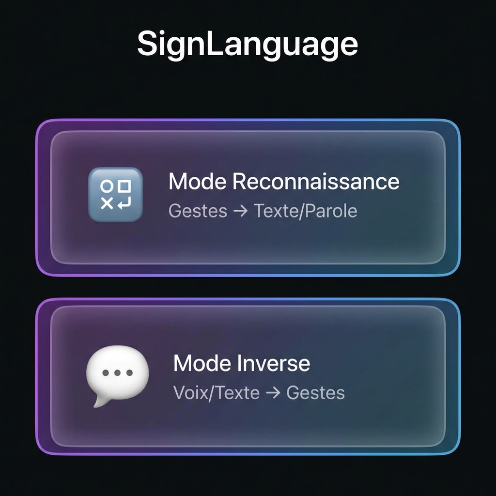
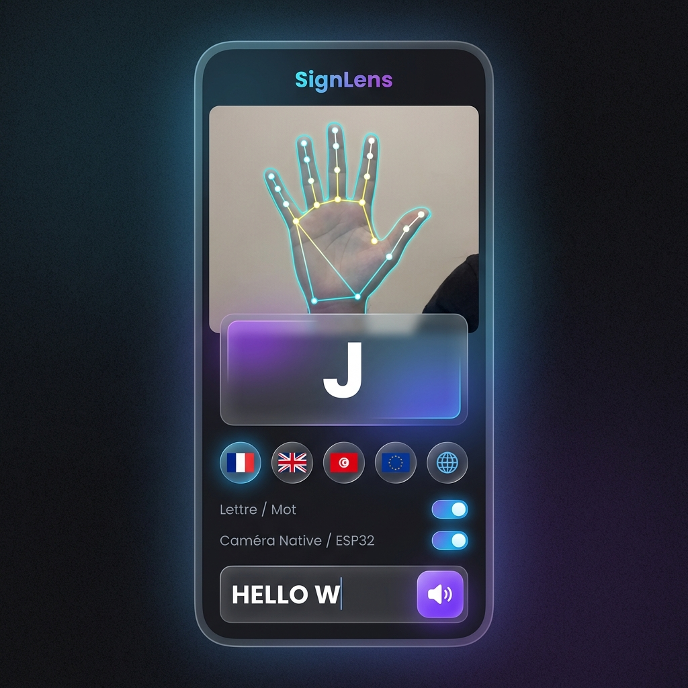
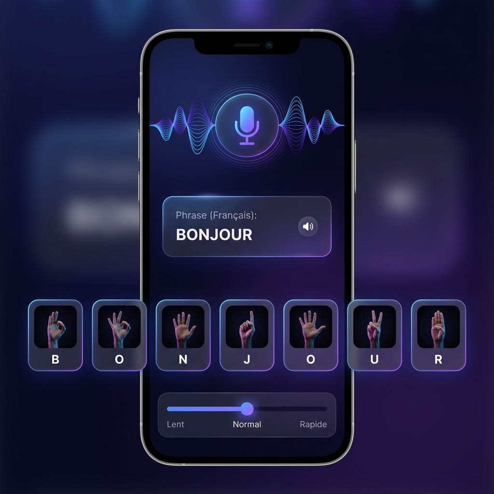
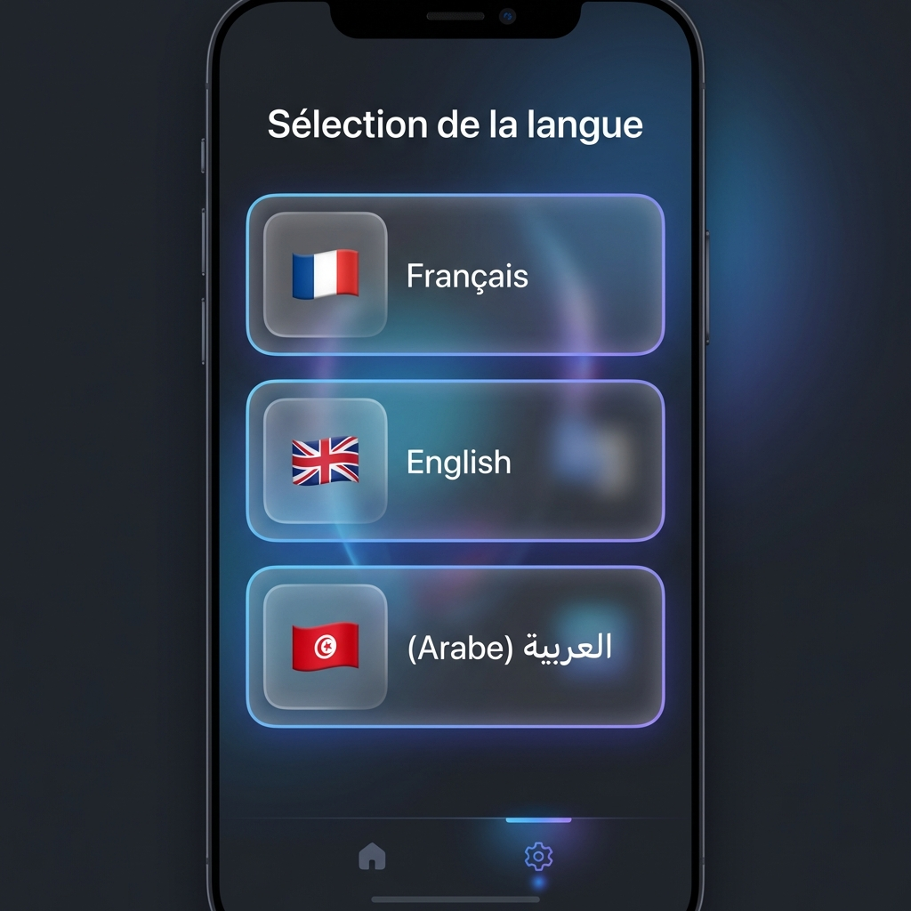
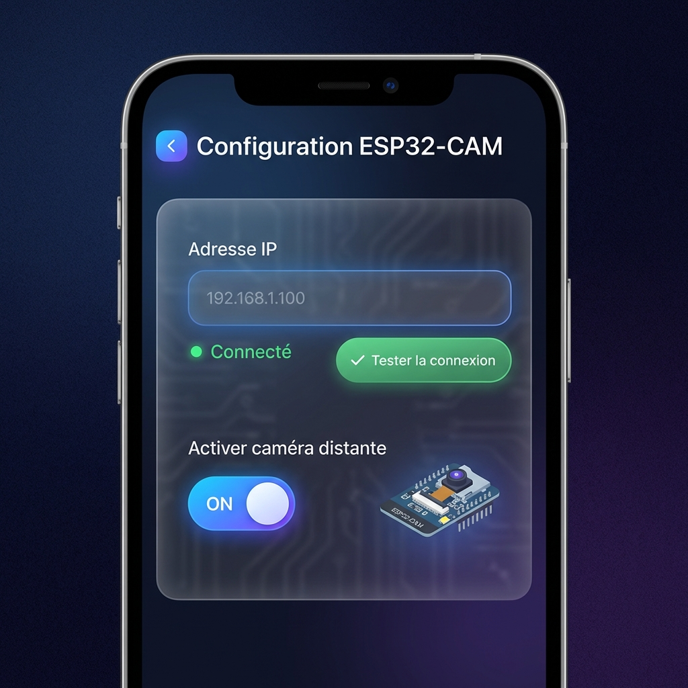

<!DOCTYPE html>
<html lang="fr">

<head>
    <meta charset="UTF-8">
    <meta name="viewport" content="width=device-width, initial-scale=1.0">
    <title>SignLanguage | Intelligence Artificielle & Inclusion</title>
    <!-- React & Babel -->
    <script src="https://unpkg.com/react@18/umd/react.production.min.js"></script>
    <script src="https://unpkg.com/react-dom@18/umd/react-dom.production.min.js"></script>
    <script src="https://unpkg.com/@babel/standalone/babel.min.js"></script>
    <!-- AOS Animation Library -->
    <link href="https://unpkg.com/aos@2.3.1/dist/aos.css" rel="stylesheet">
    <script src="https://unpkg.com/aos@2.3.1/dist/aos.js"></script>
    <link href="https://fonts.googleapis.com/css2?family=Outfit:wght@300;400;600;800&display=swap" rel="stylesheet">
    <style>
        :root {
            --primary: #6366f1;
            --primary-glow: rgba(99, 102, 241, 0.5);
            --accent: #06b6d4;
            --bg: #030712;
            --card-bg: #111827;
            --text: #f9fafb;
            --text-muted: #9ca3af;
        }

        * {
            margin: 0;
            padding: 0;
            box-sizing: border-box;
        }

        body {
            font-family: 'Outfit', sans-serif;
            background-color: var(--bg);
            color: var(--text);
            overflow-x: hidden;
            line-height: 1.6;
        }

        .glass-nav {
            position: fixed;
            top: 0;
            width: 100%;
            padding: 1.5rem 5%;
            backdrop-filter: blur(12px);
            background: rgba(3, 7, 18, 0.9);
            z-index: 1000;
            display: flex;
            justify-content: space-between;
            align-items: center;
            border-bottom: 1px solid rgba(255, 255, 255, 0.1);
        }

        .logo {
            font-size: 1.8rem;
            font-weight: 800;
            background: linear-gradient(to right, #818cf8, #c084fc);
            -webkit-background-clip: text;
            -webkit-text-fill-color: transparent;
        }

        .nav-links a {
            margin-left: 2rem;
            text-decoration: none;
            color: var(--text);
            font-weight: 500;
            transition: color 0.3s;
        }

        .nav-links a:hover {
            color: var(--accent);
        }

        .hero {
            min-height: 100vh;
            display: flex;
            align-items: center;
            padding: 0 10%;
            background: radial-gradient(circle at 80% 20%, var(--primary-glow) 0%, transparent 40%);
        }

        .hero-content {
            max-width: 700px;
        }

        h1 {
            font-size: 4.5rem;
            line-height: 1.1;
            margin-bottom: 2rem;
            font-weight: 800;
        }

        .hero-p {
            font-size: 1.25rem;
            color: var(--text-muted);
            margin-bottom: 3rem;
        }

        .btn-group {
            display: flex;
            gap: 1.5rem;
        }

        .btn {
            padding: 1rem 2.5rem;
            border-radius: 12px;
            text-decoration: none;
            font-weight: 600;
            transition: all 0.3s cubic-bezier(0.4, 0, 0.2, 1);
            position: relative;
            overflow: hidden;
            display: inline-block;
        }

        .btn-primary {
            background: var(--primary);
            color: white;
            box-shadow: 0 10px 20px -10px var(--primary);
        }

        .btn-primary:hover {
            transform: translateY(-5px);
            box-shadow: 0 20px 40px -15px var(--primary);
        }

        .section-title {
            text-align: center;
            font-size: 3rem;
            margin-bottom: 1rem;
            font-weight: 700;
        }

        .section-subtitle {
            text-align: center;
            color: var(--text-muted);
            font-size: 1.2rem;
            margin-bottom: 4rem;
        }

        .grid-features {
            display: grid;
            grid-template-columns: repeat(auto-fit, minmax(300px, 1fr));
            gap: 2rem;
            padding: 5rem 10%;
        }

        .card {
            background: var(--card-bg);
            padding: 3rem;
            border-radius: 24px;
            border: 1px solid rgba(255, 255, 255, 0.05);
            transition: all 0.4s ease;
        }

        .card:hover {
            border-color: var(--primary);
            background: rgba(99, 102, 241, 0.05);
            transform: translateY(-10px);
        }

        /* Interface Screenshots Section */
        .interfaces-section {
            padding: 8rem 5%;
            background: radial-gradient(circle at 20% 50%, rgba(6, 182, 212, 0.1) 0%, transparent 50%);
        }

        .interface-grid {
            display: grid;
            gap: 4rem;
            max-width: 1400px;
            margin: 0 auto;
        }

        .interface-card {
            display: grid;
            grid-template-columns: 1fr 1fr;
            gap: 3rem;
            align-items: center;
            background: var(--card-bg);
            padding: 3rem;
            border-radius: 32px;
            border: 1px solid rgba(255, 255, 255, 0.05);
            transition: all 0.4s ease;
        }

        .interface-card:nth-child(even) {
            grid-template-columns: 1fr 1fr;
        }

        .interface-card:nth-child(even) .interface-img {
            order: 2;
        }

        .interface-card:hover {
            border-color: var(--accent);
            transform: translateY(-5px);
            box-shadow: 0 20px 60px rgba(6, 182, 212, 0.2);
        }

        .interface-img {
            width: 100%;
            border-radius: 24px;
            box-shadow: 0 20px 50px rgba(0, 0, 0, 0.6);
            transition: transform 0.4s ease;
        }

        .interface-card:hover .interface-img {
            transform: scale(1.05);
        }

        .interface-content h3 {
            font-size: 2rem;
            margin-bottom: 1rem;
            background: linear-gradient(to right, #818cf8, var(--accent));
            -webkit-background-clip: text;
            -webkit-text-fill-color: transparent;
        }

        .interface-content .number {
            font-size: 3rem;
            font-weight: 800;
            color: rgba(99, 102, 241, 0.3);
            margin-bottom: 0.5rem;
        }

        .interface-content ul {
            list-style: none;
            margin-top: 1.5rem;
        }

        .interface-content li {
            padding: 0.5rem 0;
            color: var(--text-muted);
            position: relative;
            padding-left: 1.5rem;
        }

        .interface-content li:before {
            content: "✓";
            position: absolute;
            left: 0;
            color: var(--accent);
            font-weight: bold;
        }

        .gallery {
            padding: 5rem 10%;
        }

        .gallery-grid {
            display: grid;
            grid-template-columns: repeat(2, 1fr);
            gap: 1.5rem;
        }

        .gallery-img {
            width: 100%;
            height: 500px;
            object-fit: cover;
            border-radius: 30px;
            box-shadow: 0 30px 60px rgba(0, 0, 0, 0.5);
        }

        .download-sec {
            padding: 10rem 10%;
            text-align: center;
        }

        .download-box {
            background: linear-gradient(145deg, #111827, #030712);
            padding: 5rem;
            border-radius: 40px;
            border: 1px solid rgba(255, 255, 255, 0.1);
        }

        .stats-grid {
            display: grid;
            grid-template-columns: repeat(auto-fit, minmax(200px, 1fr));
            gap: 2rem;
            padding: 3rem 10%;
            max-width: 1200px;
            margin: 0 auto;
        }

        .stat-card {
            text-align: center;
            padding: 2rem;
        }

        .stat-number {
            font-size: 3rem;
            font-weight: 800;
            background: linear-gradient(to right, var(--primary), var(--accent));
            -webkit-background-clip: text;
            -webkit-text-fill-color: transparent;
        }

        .stat-label {
            color: var(--text-muted);
            margin-top: 0.5rem;
        }

        @media (max-width: 968px) {
            h1 {
                font-size: 3rem;
            }

            .hero {
                padding: 0 5%;
                text-align: center;
            }

            .btn-group {
                flex-direction: column;
            }

            .gallery-grid {
                grid-template-columns: 1fr;
            }

            .interface-card {
                grid-template-columns: 1fr !important;
            }

            .interface-card:nth-child(even) .interface-img {
                order: 1;
            }

            .nav-links {
                display: none;
            }
        }
    </style>
</head>

<body>
    <div id="root"></div>

    <script type="text/babel">
        const { useState, useEffect } = React;

        function App() {
            useEffect(() => {
                AOS.init({ duration: 1000, once: true });
            }, []);

            return (
                <main>
                    <nav className="glass-nav">
                        <div className="logo">SignLanguage</div>
                        <div className="nav-links">
                            <a href="#interfaces">Interfaces</a>
                            <a href="#about">Technologie</a>
                            <a href="#download" className="btn btn-primary" style={{ padding: '0.6rem 1.5rem' }}>Télécharger</a>
                        </div>
                    </nav>

                    <section className="hero">
                        <div className="hero-content" data-aos="fade-right">
                            <h1>L'IA au service du silence.</h1>
                            <p className="hero-p">
                                <strong>SignLanguage</strong> est une application mobile innovante qui brise les barrières de communication.
                                En utilisant la vision par ordinateur et le Deep Learning, notre système capture les mouvements des mains
                                pour les traduire instantanément en texte et en parole. Notre mission : offrir une voix à ceux qui utilisent les signes.
                            </p>
                            <div className="btn-group">
                                <a href="#interfaces" className="btn btn-primary">Découvrir l'App</a>
                                <a href="#about" className="btn" style={{ border: '1px solid white', color: 'white' }}>Notre Technologie</a>
                            </div>
                        </div>
                    </section>

                    <section style={{ padding: '4rem 10%', background: 'rgba(6, 182, 212, 0.05)' }}>
                        <div className="stats-grid">
                            <div className="stat-card" data-aos="fade-up">
                                <div className="stat-number">90.3%</div>
                                <div className="stat-label">Précision Lettres</div>
                            </div>
                            <div className="stat-card" data-aos="fade-up" data-aos-delay="100">
                                <div className="stat-number">78.5%</div>
                                <div className="stat-label">Précision Mots</div>
                            </div>
                            <div className="stat-card" data-aos="fade-up" data-aos-delay="200">
                                <div className="stat-number">75ms</div>
                                <div className="stat-label">Latence</div>
                            </div>
                            <div className="stat-card" data-aos="fade-up" data-aos-delay="300">
                                <div className="stat-number">3</div>
                                <div className="stat-label">Langues</div>
                            </div>
                        </div>
                    </section>

                    <section id="interfaces" className="interfaces-section">
                        <h2 className="section-title" data-aos="fade-up">Interfaces Modernes</h2>
                        <p className="section-subtitle" data-aos="fade-up">Design glassmorphisme élégant et intuitif</p>

                        <div className="interface-grid">
                            {/* Home Screen */}
                            <div className="interface-card" data-aos="fade-up">
                                <div className="interface-content">
                                    <div className="number">01</div>
                                    <h3>🏠 Écran d'Accueil</h3>
                                    <p style={{ color: 'var(--text-muted)', marginBottom: '1rem' }}>
                                        Interface moderne avec des cartes glassmorphisme et gradients violets-bleus.
                                        Navigation simple et intuitive vers les deux modes principaux.
                                    </p>
                                    <ul>
                                        <li>Sélection Mode Reconnaissance 🔤</li>
                                        <li>Sélection Mode Inverse 💬</li>
                                        <li>Accès rapide aux paramètres</li>
                                        <li>Boutons Langue et ESP32-CAM</li>
                                    </ul>
                                </div>
                                
                            </div>

                            {/* Recognition Mode */}
                            <div className="interface-card" data-aos="fade-up">
                                <div className="interface-content">
                                    <div className="number">02</div>
                                    <h3>🔤 Mode Reconnaissance</h3>
                                    <p style={{ color: 'var(--text-muted)', marginBottom: '1rem' }}>
                                        Détection en temps réel des gestes avec affichage des 21 landmarks colorés sur la main.
                                        Preview caméra avec overlay glassmorphisme élégant.
                                    </p>
                                    <ul>
                                        <li>Détection lettres et mots séquences</li>
                                        <li>Support 3 langues (🇫🇷 🇬🇧 🇹🇳)</li>
                                        <li>Historique phrases avec images de gestes</li>
                                        <li>Synthèse vocale (TTS)</li>
                                        <li>Landmarks colorés par doigt</li>
                                    </ul>
                                </div>
                                
                            </div>

                            {/* Inverse Mode */}
                            <div className="interface-card" data-aos="fade-up">
                                <div className="interface-content">
                                    <div className="number">03</div>
                                    <h3>💬 Mode Inverse</h3>
                                    <p style={{ color: 'var(--text-muted)', marginBottom: '1rem' }}>
                                        Reconnaissance vocale pour convertir la parole en séquence de gestes.
                                        Animation lettre par lettre avec contrôle de vitesse.
                                    </p>
                                    <ul>
                                        <li>Speech-to-Text multilingue</li>
                                        <li>Affichage séquentiel des gestes</li>
                                        <li>Contrôle vitesse (Lent/Normal/Rapide)</li>
                                        <li>Visualisation forme d'onde audio</li>
                                        <li>Images gestes pour chaque lettre</li>
                                    </ul>
                                </div>
                                
                            </div>

                            {/* Language Selection */}
                            <div className="interface-card" data-aos="fade-up">
                                <div className="interface-content">
                                    <div className="number">04</div>
                                    <h3>🌍 Sélection de Langue</h3>
                                    <p style={{ color: 'var(--text-muted)', marginBottom: '1rem' }}>
                                        Interface élégante pour choisir la langue de traduction parmi trois options.
                                        Sauvegarde automatique des préférences.
                                    </p>
                                    <ul>
                                        <li>🇫🇷 Français (par défaut)</li>
                                        <li>🇬🇧 English (traduction auto)</li>
                                        <li>🇹🇳 العربية (innovation Maghreb)</li>
                                        <li>Sauvegarde avec SharedPreferences</li>
                                        <li>État sélectionné visuellement distinct</li>
                                    </ul>
                                </div>
                                
                            </div>

                            {/* ESP32 Config */}
                            <div className="interface-card" data-aos="fade-up">
                                <div className="interface-content">
                                    <div className="number">05</div>
                                    <h3>📡 Configuration ESP32-CAM</h3>
                                    <p style={{ color: 'var(--text-muted)', marginBottom: '1rem' }}>
                                        Configuration facile de la caméra externe ESP32-CAM pour capture distante.
                                        Test de connexion intégré.
                                    </p>
                                    <ul>
                                        <li>Saisie adresse IP avec validation</li>
                                        <li>Test connexion HTTP (timeout 5s)</li>
                                        <li>Indicateur statut (Connecté/Déconnecté)</li>
                                        <li>Toggle activation caméra distante</li>
                                        <li>Streaming MJPEG</li>
                                    </ul>
                                </div>
                                
                            </div>
                        </div>
                    </section>

                    <section id="about" style={{ padding: '5rem 0' }}>
                        <h2 className="section-title" data-aos="fade-up">Comment fonctionne SignLanguage ?</h2>
                        <p className="section-subtitle" data-aos="fade-up">Intelligence artificielle et vision par ordinateur</p>
                        <div className="grid-features" style={{ maxWidth: '1200px', margin: '0 auto' }}>
                            <div className="card" data-aos="fade-up" data-aos-delay="100">
                                <h3 style={{ fontSize: '1.5rem', marginBottom: '1rem' }}>🎯 Capture & Précision</h3>
                                <p style={{ color: '#9ca3af' }}>
                                    Grâce à <strong>MediaPipe Hand Landmarker</strong>, nous détectons 21 points clés sur chaque main
                                    avec une précision exceptionnelle. Cette technologie permet de distinguer des gestes subtils,
                                    même en basse luminosité.
                                </p>
                            </div>
                            <div className="card" data-aos="fade-up" data-aos-delay="200">
                                <h3 style={{ fontSize: '1.5rem', marginBottom: '1rem' }}>🧠 Modèles Hybrides</h3>
                                <p style={{ color: '#9ca3af' }}>
                                    Nous utilisons des modèles <strong>CNN</strong> et <strong>LSTM</strong> avec <strong>TensorFlow Lite</strong>
                                    entraînés sur des milliers d'images pour reconnaître à la fois les lettres isolées (90.3% précision)
                                    et les mots complets en séquences (78.5% précision).
                                </p>
                            </div>
                            <div className="card" data-aos="fade-up" data-aos-delay="300">
                                <h3 style={{ fontSize: '1.5rem', marginBottom: '1rem' }}>📱 Multi-Plateforme</h3>
                                <p style={{ color: '#9ca3af' }}>
                                    Application <strong>Flutter</strong> cross-platform avec support caméra interne et externe.
                                    Communique avec l'<strong>ESP32-CAM</strong> via Wi-Fi pour une flexibilité totale d'utilisation.
                                    Fonctionne 100% hors-ligne.
                                </p>
                            </div>
                        </div>
                    </section>

                    <section className="gallery">
                        <div className="gallery-grid">
                            
                            
                        </div>
                    </section>

                    <section id="download" className="download-sec">
                        <div className="download-box" data-aos="flip-up">
                            <h2 style={{ fontSize: '3rem', marginBottom: '1rem' }}>Rejoignez l'aventure</h2>
                            <p style={{ marginBottom: '3rem', fontSize: '1.2rem', color: '#9ca3af' }}>
                                Téléchargez dès maintenant l'application pour briser les barrières de la communication.
                            </p>
                            <div className="btn-group" style={{ justifyContent: 'center' }}>
                                <a href="https://github.com/doosr/SignLanguageApp_Build/actions" className="btn btn-primary">
                                    📦 Android APK (GitHub Actions)
                                </a>
                                <a href="dist/inference_classifier.exe" className="btn" style={{ background: '#1f2937', color: 'white' }}>
                                    🖥️ Windows EXE
                                </a>
                            </div>
                            <p style={{ marginTop: '2rem', fontSize: '0.9rem', color: '#6b7280' }}>
                                Build automatique via GitHub Actions • Version 1.0.0
                            </p>
                        </div>
                    </section>

                    <footer style={{ padding: '4rem', textAlign: 'center', color: '#4b5563', background: 'rgba(17, 24, 39, 0.5)' }}>
                        <p style={{ marginBottom: '1rem' }}>
                            © 2026 SignLanguage Project. Créé avec passion pour l'inclusion sociale.
                        </p>
                        <p style={{ fontSize: '0.9rem' }}>
                            Pépinière d'Entreprises APII Mahdia • ISET Mahdia • Programme startup APII 2026
                        </p>
                    </footer>
                </main>
            );
        }

        const root = ReactDOM.createRoot(document.getElementById('root'));
        root.render(<App />);
    </script>
</body>

</html>